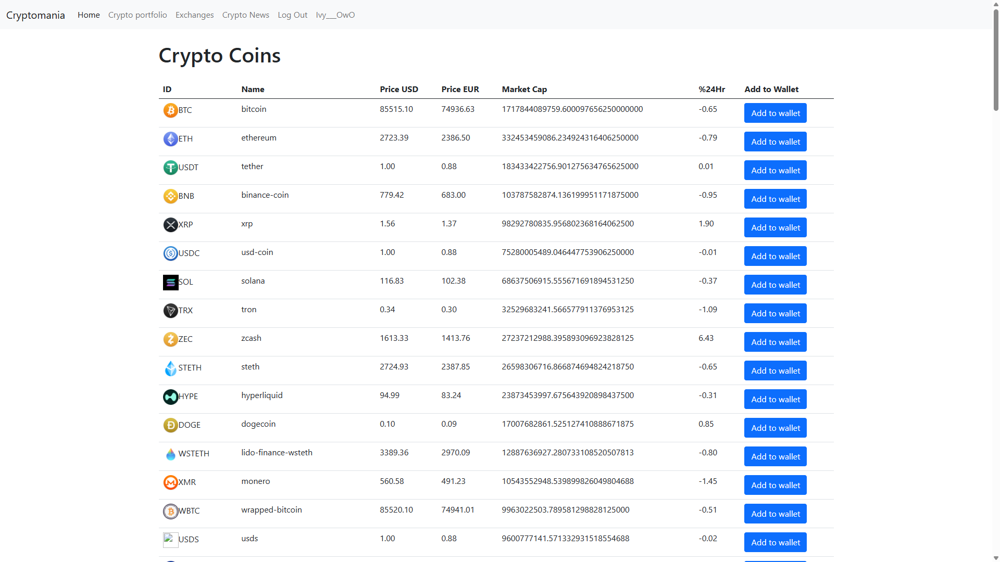
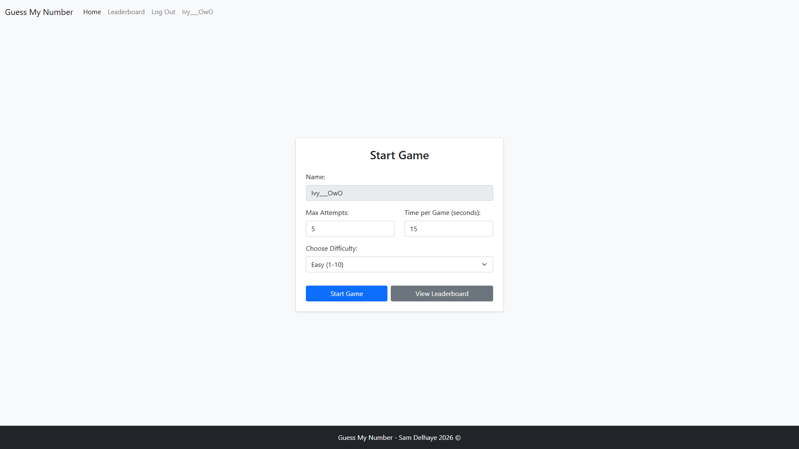
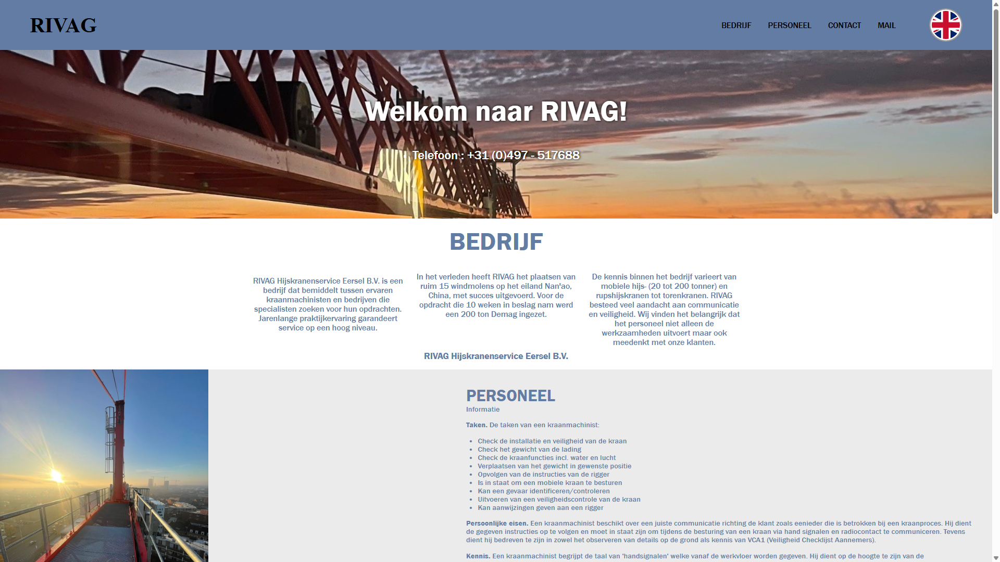
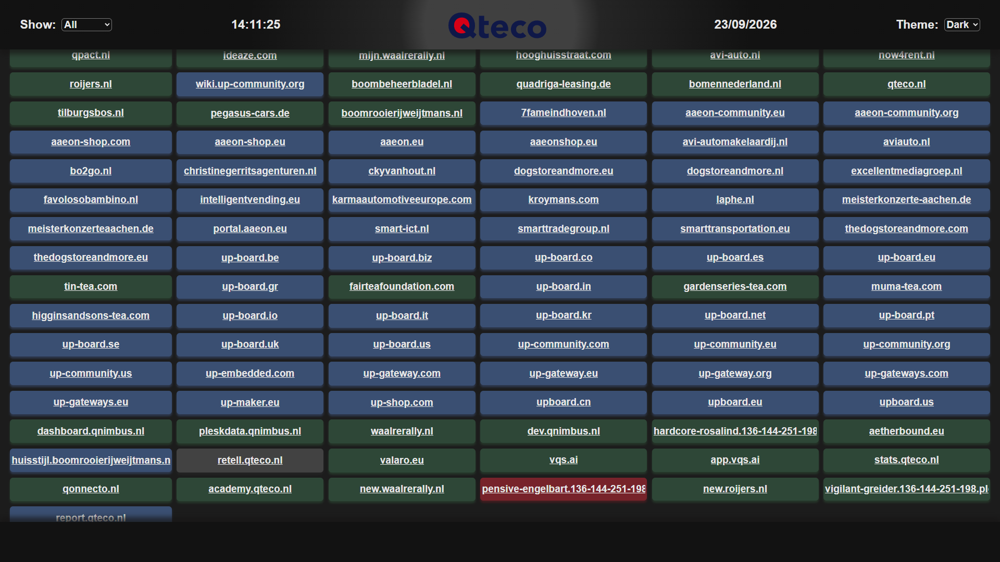
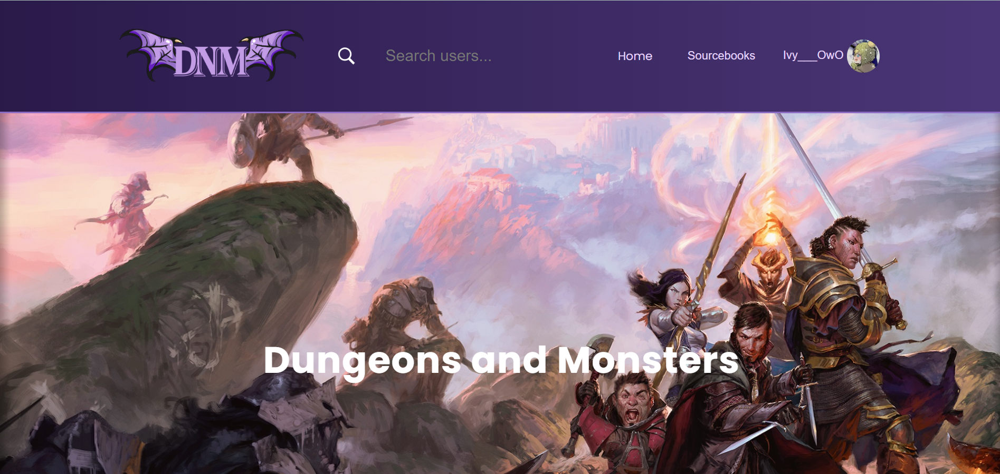
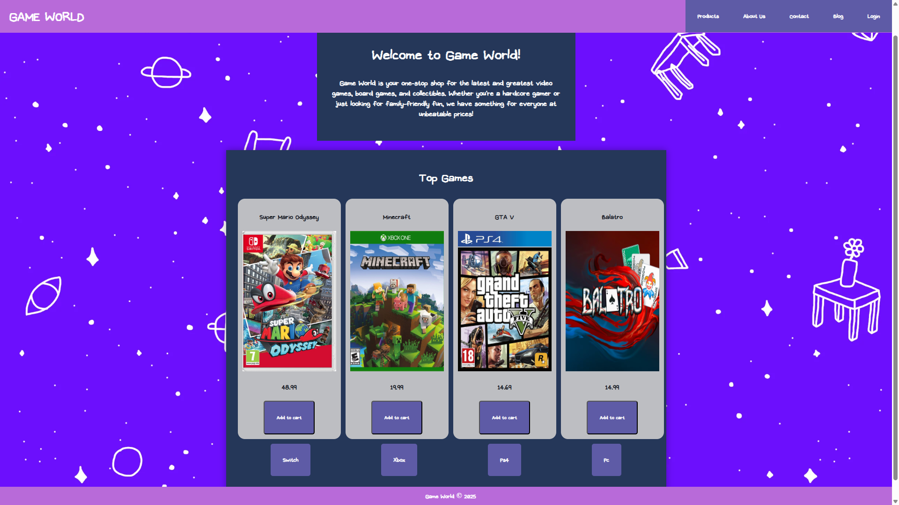
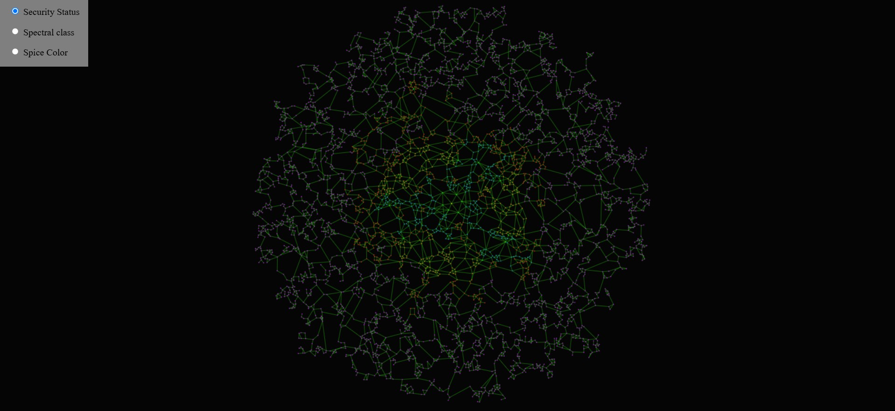
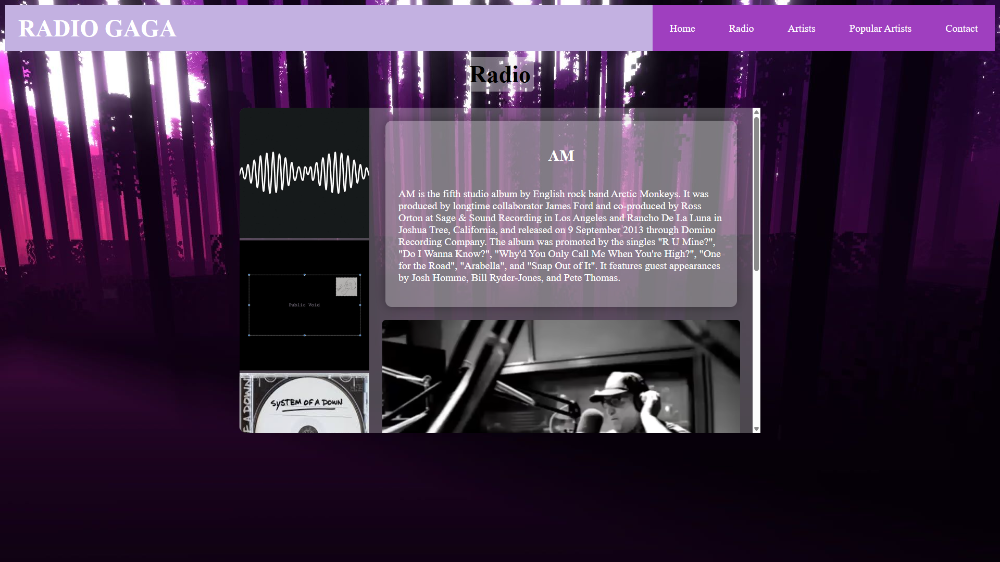

CryptoMania
Een dashboard voor cryptovaluta met actuele muntgegevens, beursinformatie, nieuws en een persoonlijke portfolio.
Bekijk repository ↗Ik studeer full-stack development aan Ter AA in Helmond. Ik vind het leuk om ideeën om te zetten in bruikbare, doordachte digitale ervaringen en bij elk project iets nieuws te leren.
Ik ben vooral geïnteresseerd in webontwikkeling en het bouwen van projecten met anderen. PHP, HTML, CSS en SQL ken ik goed; ook mijn vaardigheden in JavaScript en Python blijf ik ontwikkelen.

Een dashboard voor cryptovaluta met actuele muntgegevens, beursinformatie, nieuws en een persoonlijke portfolio.
Bekijk repository ↗
Een getimed raadspel met meerdere moeilijkheidsniveaus, spelersaccounts en een scorebord.
Bekijk repository ↗
Een tweetalige bedrijfswebsite gebouwd met October CMS, met informatie over het bedrijf en personeel, plus een contactgedeelte.
Bekijk repository ↗
Een live servicedashboard met filters voor statuscodes, serverstatistieken, thema-instellingen en automatisch vernieuwen.
Bekijk repository ↗
Een gezamenlijke, zelfgebouwde digitale hulp voor tabletop-personages en campagnes.
Bekijk repository ↗
Een gamewebshop gekoppeld aan een database, met accounts en een winkelwagen op basis van PHP-sessies.
Bekijk repository ↗
Een gamekaart in ontwikkeling die wereldgegevens uit JSON laadt en op canvas wordt getekend. Gemaakt met een vriend.
Bekijk repository ↗
Een muziekspeler die met PHP muziekinformatie uit een database ophaalt en weergeeft.
Bekijk repository ↗